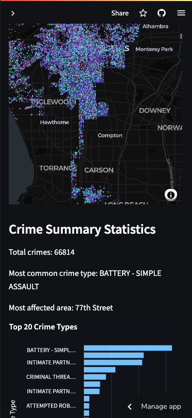
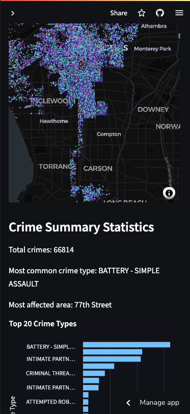

{% if project.link %}
 {% endif %}
{% if project.url_for %}
{% endif %}
{% endif %}
{% if project.url_for %}
{% endif %}
{{ project.date }}
{{ project.title }}
{{ project.subtitle }}
{% for tag in project.tags %}
{{ tag }}
{% endfor %}{{ project.description }}
{% if project.link %} {% endif %} {% if project.url_for %} {% endif %} 
